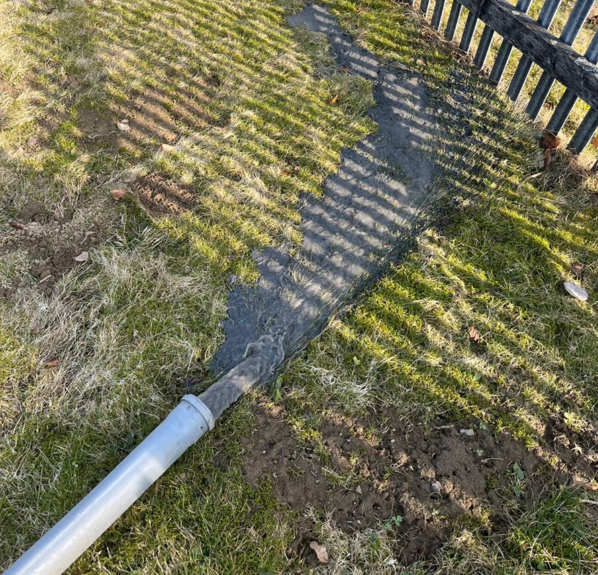
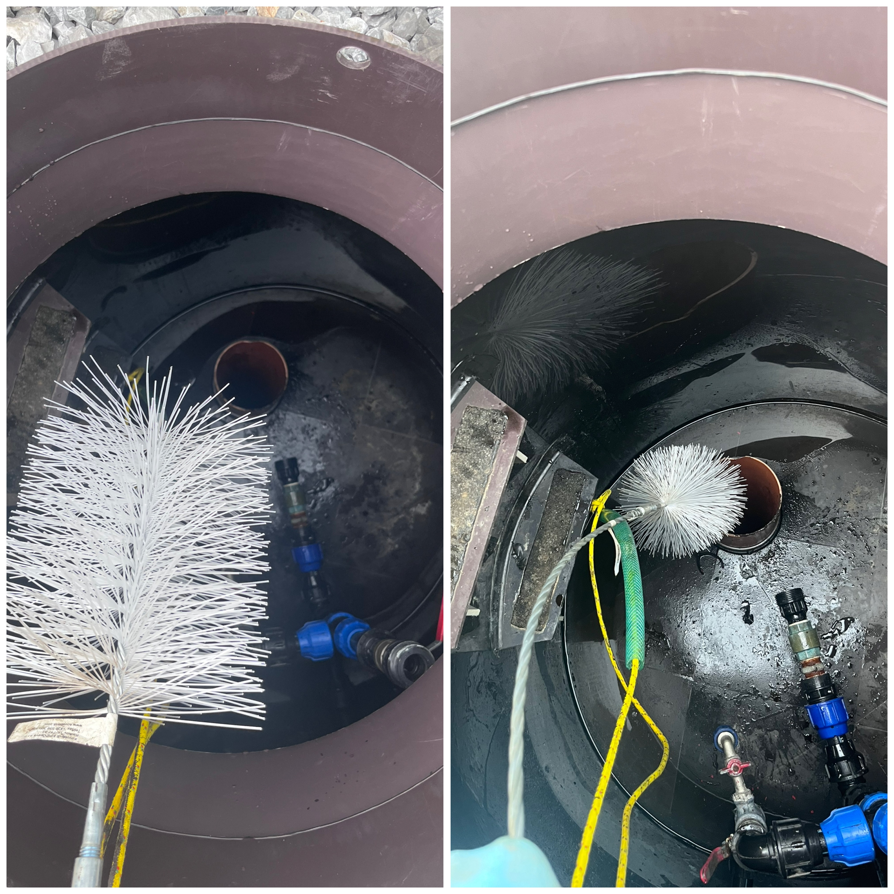
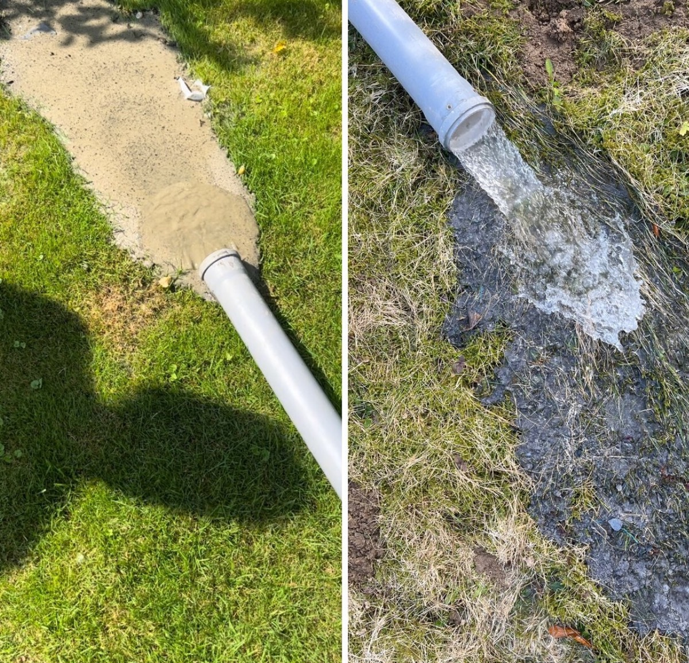
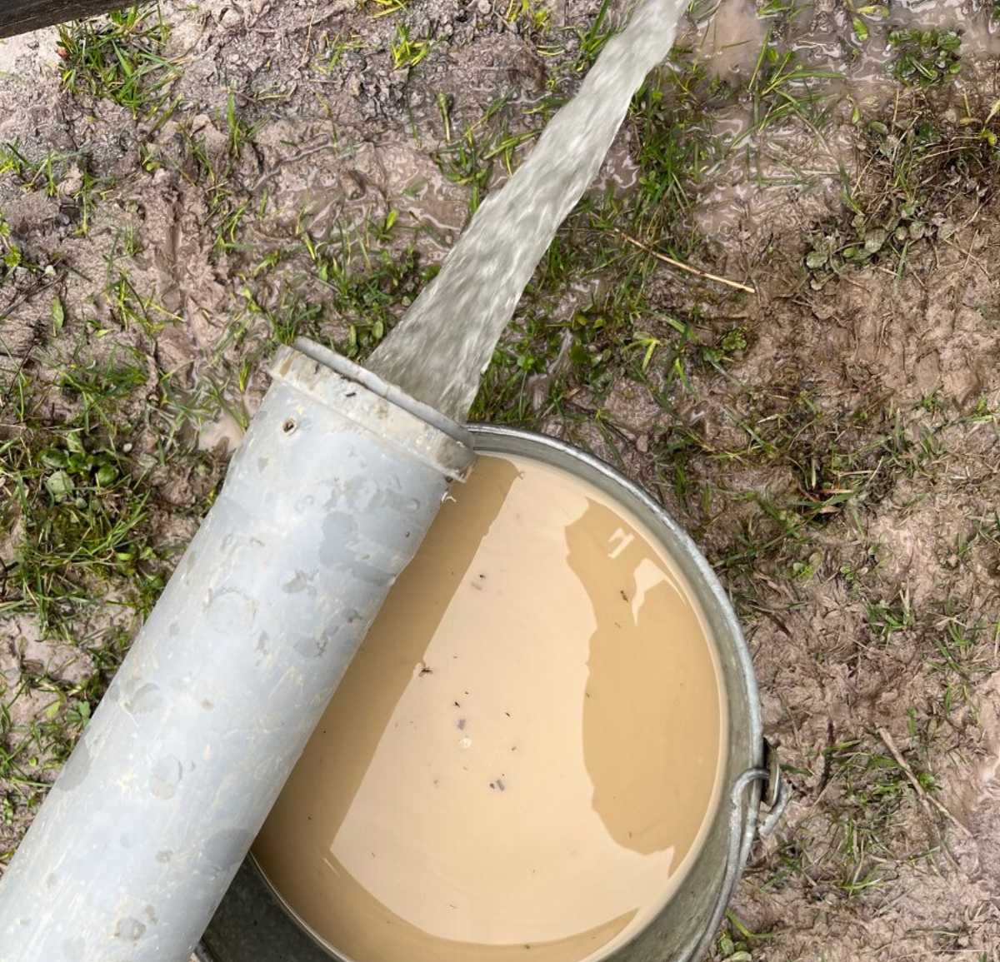
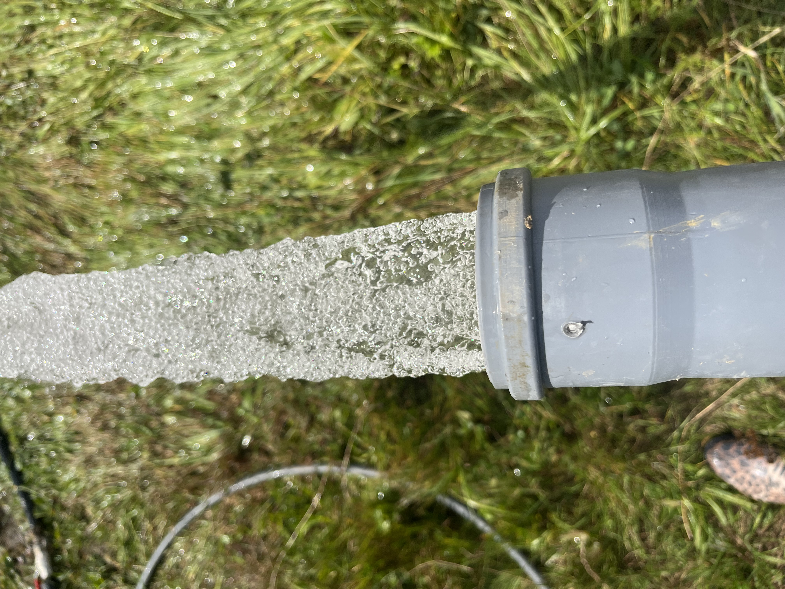

NAŠA PRÁCA
Ukážky z terénu
Profesionálne čistenie studní v praxi — od prípravy až po výsledok.








Realizujeme profesionálne čistenie a odpieskovanie vŕtaných aj kopaných studní technológiou AIRLIFT s profesionálnym vzduchovým kompresorom — až do hĺbky 70 m a viac.
Komplexné riešenia pre čistenie a údržbu studní s technológiou AIRLIFT
Využívame overenú technológiu AIRLIFT s profesionálnym vzduchovým kompresorom. Naša metóda zabezpečuje dôkladné čistenie a odpieskovanie aj tých najhlbších vrtov.
Profesionálne čistenie studní v praxi — od prípravy až po výsledok.
Pôsobíme v severozápadnej časti Slovenska
Odpovede na najčastejšie otázky ohľadom čistenia studní
Radi vám odpovieme na všetky otázky a pripravíme nezáväznú ponuku
Sme k dispozícii v pracovné dni
Nezáväzná konzultácia a cenová ponuka — radi zodpovieme všetky vaše otázky.
+421 948 434 120 info@studne-cistenie.sk